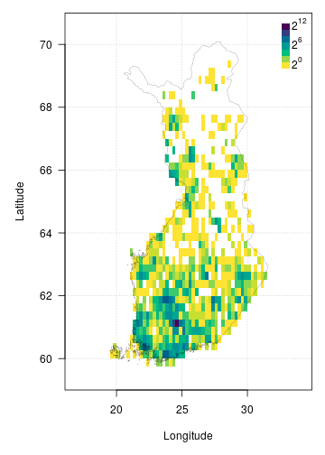

FinBIF aggregates Finnish biodiversity data from multiple sources in a single open access portal for researchers, citizen scientists, industry and government. FinBIF allows users of biodiversity information to find, access, combine and visualise data on Finnish plants, animals and microorganisms. The finbif R package makes the publicly available data in FinBIF easily accessible to programmers. Biodiversity information is available on taxonomy and taxon occurrence. Occurrence data can be filtered by taxon, time, location and other variables. The data accessed are conveniently preformatted for subsequent analyses.
Installing the finbif package
You can install the current stable version of finbif from CRAN,
install.packages("finbif")You can also install the latest development version of finbif from GitHub,
remotes::install_github("luomus/finbif@dev")Getting a FinBIF access token
To use the FinBIF API you must first request and set a personal access token. You can request an API token to be sent to your email address with the function finbif_get_token().
finbif_request_token("your@email.com")Copy the access token that was sent to your email and set it as the environment variable FINBIF_ACCESS_TOKEN either for the current session,
Sys.setenv(
FINBIF_ACCESS_TOKEN = "xtmSOIxjPwq0pOMB1WvcZgFLU9QBklauOlonWl8K5oaLIx8RniJLrv"
)
# Note: the above is not a real access token. Do not try using it., or by adding it to a Renviron startup file (see here for details).
Working with taxa
You can check to see if a taxon exists in the FinBIF database.
finbif_check_taxa("Ursus arctos")
#> [Ursus arctos] ID: MX.47348If the taxon is in the FinBIF database its unique ID is returned. When a taxon is not in the FinBIF database it is reported as “not found” and for that taxa the list element is NA.
(taxa <- finbif_check_taxa(c("Ursus arctos", "Moomin")))
#> [Ursus arctos] ID: MX.47348
#> [Moomin ] Not found
taxa[[1]]
#> Ursus arctos
#> "MX.47348"
taxa[[2]]
#> Moomin
#> NAYou can also specify the taxonomic rank when searching FinBIF and the search will be limited to the specified rank.
finbif_check_taxa(list(species = c("Ursus arctos", "Ursus"), genus = "Ursus"))
#> [species: Ursus arctos] ID: MX.47348
#> [species: Ursus ] Not found
#> [genus: Ursus ] ID: MX.51311The function finbif_taxa() can be used for a more general search for taxa in the FinBIF database. Searches can be exact, partial or likely (fuzzy matching). Information for a single taxon is returned when using exact or fuzzy matching, but multiple taxa, up to a limit, n, may be returned when using partial matching.
birch_search <- finbif_taxa("Betula pendula", 2, "partial")
birch_search$content Click to show/hide output.
#> [[1]]
#> [[1]]$matchingName
#> [1] "Betula pendula var. pendula"
#>
#> [[1]]$nameType
#> [1] "MX.scientificName"
#>
#> [[1]]$id
#> [1] "MX.37994"
#>
#> [[1]]$scientificName
#> [1] "Betula pendula var. pendula"
#>
#> [[1]]$taxonRank
#> [1] "MX.variety"
#>
#> [[1]]$cursiveName
#> [1] TRUE
#>
#> [[1]]$finnish
#> [1] TRUE
#>
#> [[1]]$species
#> [1] TRUE
#>
#> [[1]]$vernacularName
#> [[1]]$vernacularName$sv
#> [1] "vanlig vårtbjörk"
#>
#> [[1]]$vernacularName$fi
#> [1] "vihtakoivu"
#>
#>
#> [[1]]$informalGroups
#> [[1]]$informalGroups[[1]]
#> [[1]]$informalGroups[[1]]$id
#> [1] "MVL.343"
#>
#> [[1]]$informalGroups[[1]]$name
#> [[1]]$informalGroups[[1]]$name$fi
#> [1] "Putkilokasvit"
#>
#> [[1]]$informalGroups[[1]]$name$sv
#> [1] "Kärlväxter"
#>
#> [[1]]$informalGroups[[1]]$name$en
#> [1] "Vascular plants"
#>
#>
#>
#>
#> [[1]]$type
#> [1] "partialMatches"
#>
#>
#> [[2]]
#> [[2]]$matchingName
#> [1] "Betula nana × pendula"
#>
#> [[2]]$nameType
#> [1] "MX.scientificName"
#>
#> [[2]]$id
#> [1] "MX.38005"
#>
#> [[2]]$scientificName
#> [1] "Betula nana × pendula"
#>
#> [[2]]$taxonRank
#> [1] "MX.infragenericHybrid"
#>
#> [[2]]$cursiveName
#> [1] TRUE
#>
#> [[2]]$finnish
#> [1] TRUE
#>
#> [[2]]$species
#> [1] TRUE
#>
#> [[2]]$vernacularName
#> named list()
#>
#> [[2]]$informalGroups
#> [[2]]$informalGroups[[1]]
#> [[2]]$informalGroups[[1]]$id
#> [1] "MVL.343"
#>
#> [[2]]$informalGroups[[1]]$name
#> [[2]]$informalGroups[[1]]$name$fi
#> [1] "Putkilokasvit"
#>
#> [[2]]$informalGroups[[1]]$name$sv
#> [1] "Kärlväxter"
#>
#> [[2]]$informalGroups[[1]]$name$en
#> [1] "Vascular plants"
#>
#>
#>
#>
#> [[2]]$type
#> [1] "partialMatches"
#>
#> Getting occurrence data
You can download occurrence data from the FinBIF database as a data.frame with the finbif_occurrence() function.
finbif_occurrence("Cygnus cygnus", n = 100)
#> Records downloaded: 100
#> Records available: 71156
#> A data.frame [100 x 12]
#> record_id scientific_name abundance lat_wgs84 lon_wgs84 date_time
#> 1 …JX.1315699#12 Cygnus cygnus 3 60.56739 21.57188 2021-10-03 12:00:00
#> 2 …JX.1315624#7 Cygnus cygnus 2 63.77814 23.07286 2021-10-03 12:00:00
#> 3 …JX.1315190#24 Cygnus cygnus 2 60.42794 22.20052 2021-10-02 12:00:00
#> 4 …HR.3211/96901650-U Cygnus cygnus 1 60.20356 25.18139 2021-10-02 12:00:00
#> 5 …HR.3211/96886383-U Cygnus cygnus 1 62.91891 28.18733 2021-10-02 12:00:00
#> 6 …HR.3211/96873463-U Cygnus cygnus 1 61.55599 25.95057 2021-10-02 12:00:00
#> 7 …JX.1315449#15 Cygnus cygnus 6 61.32296 28.56814 2021-10-02 10:40:00
#> 8 …JX.1315165#30 Cygnus cygnus 2 61.10535 21.55759 2021-10-02 08:25:00
#> 9 …JX.1296318#3 Cygnus cygnus 26 60.83174 26.44824 2021-09-30 12:00:00
#> 10 …HR.3211/96581760-U Cygnus cygnus 1 61.46442 23.65117 2021-09-29 12:00:00
#> ...with 90 more records and 6 more variables:
#> coordinates_uncertainty, any_issues, requires_verification, requires_identification,
#> record_reliability, record_qualityYou can search for multiple taxa at once and filter the records with the filter argument.
finbif_occurrence(
"Cygnus cygnus",
"Cygnus olor",
filter = list(coordinates_uncertainty_max = 100)
) Click to show/hide output.
#> Records downloaded: 10
#> Records available: 36710
#> A data.frame [10 x 12]
#> record_id scientific_name abundance lat_wgs84 lon_wgs84 date_time
#> 1 …41168#42 Cygnus olor 10 60.42799 22.20051 2022-09-12 12:00:00
#> 2 …40986#60 Cygnus olor 3 60.42797 22.20056 2022-09-11 12:00:00
#> 3 …41017#3 Cygnus cygnus 5 62.01636 22.99255 2022-09-11 12:00:00
#> 4 …40997#3 Cygnus cygnus 2 61.09915 21.55087 2022-09-11 09:55:00
#> 5 …40730#75 Cygnus olor 6 60.42796 22.20057 2022-09-10 12:00:00
#> 6 …40539#51 Cygnus olor 7 61.10534 21.45097 2022-09-09 08:55:00
#> 7 …38974#119 Cygnus cygnus 6 63.6616 29.22317 2022-09-08 12:00:00
#> 8 …38974#140 Cygnus cygnus 3 63.50457 29.39159 2022-09-08 12:00:00
#> 9 …38974#110 Cygnus cygnus 4 63.73461 29.37687 2022-09-08 12:00:00
#> 10 …40443#120 Cygnus olor 3 60.42797 22.20054 2022-09-08 12:00:00
#> ...with 0 more records and 6 more variables:
#> coordinates_uncertainty, any_issues, requires_verification, requires_identification,
#> record_reliability, record_qualitySee ?filters and vignette("v05_filtering") for more details on filtering FinBIF records.
Random sampling
It is possible to request a random sample of records instead of the last n records (or records ordered by some other variable).
finbif_occurrence("Birds", sample = TRUE) Click to show/hide output.
#> Records downloaded: 10
#> Records available: 19686186
#> A data.frame [10 x 12]
#> record_id scientific_name abundance lat_wgs84 lon_wgs84 date_time
#> 1 …MHU.29129341 Sturnus vulgaris 1 60.52698 21.62055 2010-05-01 12:00:00
#> 2 …JX.93743#5 Corvus corone cornix 46 62.14011 24.59989 1969-12-26 09:00:00
#> 3 …KE.67/3168115#Unit Numenius arquata 1 63.15 27.83333 2008-06-06 13:00:00
#> 4 …KE.67/11186470#Unit Emberiza citrinella 1 62.75622 26.6937 2017-01-17 14:00:00
#> 5 …JX.1029925#296 Turdus philomelos 1 61.43368 28.6004 1998-06-05 05:02:00
#> 6 …KE.67/3446629#Unit Parus major 1 60.33031 25.20922 2011-03-27 17:00:00
#> 7 …KE.67/7662953#Unit Sylvia atricapilla 1 59.83333 19.93333 1976-09-07 12:00:00
#> 8 …KE.67/7531888#Unit Prunella modularis 1 59.83333 19.93333 1993-04-26 07:00:00
#> 9 …KE.383/1607#UNIT76 Lophophanes cristat… 3 59.9815 24.39953 1996-12-16 12:00:00
#> 10 …JX.1025345#261 Fringilla coelebs 1 62.29238 24.35626 2009-06-08 03:30:00
#> ...with 0 more records and 6 more variables:
#> coordinates_uncertainty, any_issues, requires_verification, requires_identification,
#> record_reliability, record_qualityPlotting occurrence data
The finbif package has a number of inbuilt functions for plotting (see e.g., breaks_xy() and hist_xy()). There is also an inbuilt dataset that can be used to plot the border of Finland (?finland_map). Together these utilities can be used to plot occurrences after they have been downloaded from FinBIF. For example, the following can be used to plot the density of Eurasian Jay occurrences from Finland.
Click to show/hide code.
# Download all the occurrences of Eurasian Jay in Finland
# that have coordinates accurate to at least 100m
jays <- finbif_occurrence(
taxa = "Eurasian Jay",
filter = c(
coordinates_uncertainty_max = 100,
country = "Finland"
),
n = 2e4,
quiet = TRUE
)
# Compute the density of occurrences in 1/4 degree cells and plot as a heatmap
with(
data = c(jays, finland_map),
expr = {
par(mar = c(5, 5, 1, 1), las = 1)
# compute a 2d histogram from the occurrences
breaks <- breaks_xy(bbox, .25) # breakpoints every 1/4 of a degree
density <- hist_xy(xy = list(lon_wgs84, lat_wgs84), breaks)
# plot the histogram as a heatmap
image(density,
asp = 2.4,
breaks = 2^seq(0, 12), # breakpoints for the gridcell colours
col = hcl.colors(12, rev = TRUE),
xlab = "Longitude",
ylab = "Latitude",
panel.first = grid())
legend("topright",
inset = c(0, .01),
legend = expression(2^12, "", "", 2^6, "", "", 2^0),
fill = hcl.colors(7),
border = NA,
bty = "n",
adj = c(0, 0.25),
x.intersp = .2,
y.intersp = .5)
# add the Finnish border
polygon(x = vertices, lwd = .2)
}
)